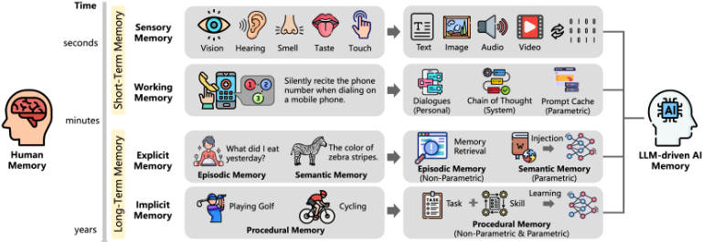

从人类记忆到 AI 记忆：LLM 时代的记忆机制综述
这篇综述系统梳理了 LLM 驱动 AI 系统的记忆机制，指出已有工作大多只按时间维度（短期/长期）划分记忆，缺乏与人类记忆的系统对照。论文先解析人类记忆的分类与机制，再提出按对象（personal/system）、形式（parametric/non-parametric）、时间（short/long）三个维度、八个象限的 3D-8Q 记忆分类法。在此框架下，论文综述了个人记忆（多轮对话加载、记忆检索增强生成、prompt caching、个性化知识编辑）与系统记忆（ReAct/Reflexion 式推理规划、BoT/AWM/Voyager 式反思与经验复用、vLLM/ChunkKV 等 KV 管理与复用），并总结多模态、流式、共享记忆等开放方向。关键结论是：记忆是 Agent 克服上下文窗口限制、实现个性化与自我进化的核心组件，非参数化长期记忆通常遵循 construction/management/retrieval/usage 四阶段流程。对团队而言，这是一份记忆与上下文工程的全景参考地图，可直接用于知识库问答与 Agent 记忆系统的方案选型。
现有记忆机制研究与综述大多只从时间维度（短期/长期记忆）分析和解释 AI 记忆，缺乏对 LLM 驱动 AI 系统记忆与人类记忆之间关系的系统梳理，也缺少关于如何借鉴人类记忆构建更强大、更高效记忆系统的系统性综述。
提出三维八象限（3D-8Q）记忆分类法：按对象（personal/system）、形式（parametric/non-parametric）、时间（short-term/long-term）三个维度划分记忆，并将人类记忆类型（感觉记忆、工作记忆、情景/语义/程序性记忆）映射到 AI 记忆系统。在此框架下从两条主线综述已有工作：个人记忆（多轮对话上下文加载、记忆检索增强生成及其 construction/management/retrieval/usage 四阶段、key-value/graph/vector 等存储格式、prompt caching、基于 PEFT/知识编辑的参数化个性化记忆）与系统记忆（ReAct、Reflexion 等推理与规划增强；BoT、AWM、Voyager、ExpeL 等反思与经验/技能复用；vLLM、ChunkKV、LLM.int8()、KV Cache、Prompt Cache、RAGCache 等 KV 管理与复用；MemoryLLM、WISE 等参数化记忆结构），最后归纳开放问题与未来方向。
未在论文中说明
区别于以往仅按时间维度（短期/长期）划分记忆的综述，本文系统建立了人类记忆与 LLM 驱动 AI 系统记忆的对应关系，并提出对象×形式×时间的三维八象限（3D-8Q）分类框架，同时覆盖个人记忆与系统记忆、参数化与非参数化记忆，形成更完整的记忆研究地图。
相关度级别：high
命中能力域：3.1 上下文工程与记忆 | 3.3 Agent 架构与工具使用 | 3.5 评测与可靠使用
理由：论文核心主题——Agent 记忆系统、RAG/检索增强、上下文窗口管理与压缩——直接命中 3.1 上下文工程与记忆的核心技术；系统记忆部分对 ReAct/Reflexion 的规划与反思、Voyager 技能库的梳理对应 3.3 Agent 架构与工具使用中的规划反思与技能系统；文中汇总的记忆评测基准（LOCOMO、BABILong 等）与 KV 缓存/prompt caching 等成本优化手段对应 3.5 评测与可靠使用。对以'用好模型'为目标的团队，这是一份可直接用于记忆与上下文方案选型、架构设计的全景图。
建议动作：深入精读并做内部分享
arXiv:2504.15965v2 [cs.IR] 2025年4月23日
Yaxiong Wu, Sheng Liang, Chen Zhang, Yichao Wang, Yongyue Zhang, Huifeng Guo, Ruiming Tang, Yong Liu
华为诺亚方舟实验室（Huawei Noah's Ark Lab）
wu.yaxiong@huawei.com
记忆是编码、存储和检索信息的过程，使人类能够长期保留经验、知识、技能和事实，并作为成长以及与世界有效互动的基础。它在塑造我们的身份、做出决策、从过往经验中学习、建立人际关系以及适应变化方面发挥着至关重要的作用。在大语言模型（LLMs）时代，记忆是指AI系统保留、回忆并利用过往交互中的信息，以改进未来响应和交互的能力。尽管以往的研究和综述已对记忆机制进行了详细描述，但目前仍缺乏一篇系统性的综述来总结和分析LLM驱动的AI系统的记忆与人类记忆之间的关系，以及我们如何从人类记忆中获得启发来构建更强大的记忆系统。为此，本文对LLM驱动的AI系统的记忆进行了全面的综述。具体而言，我们首先对人类记忆的类别进行了详细分析，并将其与AI系统的记忆相关联。其次，我们系统地梳理了现有的记忆相关工作，并提出了一种基于三个维度（对象、形式和时间）和八个象限的分类方法。最后，我们阐述了当前AI系统记忆方面的一些开放性问题，并展望了大语言模型时代记忆的可能未来研究方向。
近年来，大语言模型（LLM）凭借其强大的语言理解与生成能力，已成为人工智能（AI）系统的核心组件，并被广泛应用于智能客服、自动化写作、机器翻译、信息检索和情感分析等各类应用中 [1-4]。与依赖预定义规则和人工标注特征的传统AI系统不同，LLM驱动的AI系统具有更高的灵活性，能够以更强的适应性和上下文感知能力处理多样化的任务。此外，记忆的引入使LLM能够保留与用户的历史交互并存储上下文信息，从而在未来的交互中提供更加个性化、连续且具备上下文感知能力的响应 [2, 5, 6]。具备记忆能力的LLM驱动的AI系统不仅将提升用户体验，还将支持更复杂、更动态的应用场景，引领AI技术迈向更高的智能化与以人为中心的设计 [7, 8]。
在神经科学中，人类记忆是指大脑存储、保持和回忆信息的能力 [9, 10]。人类记忆是理解世界、学习新知识、适应环境和做出决策的基础，它使我们能够保存过去的经验、技能和知识，并帮助我们形成个人身份与行为模式 [11]。根据新记忆形成的持续时间，人类记忆可以大致分为短期记忆和长期记忆 [12]。短期记忆是指我们临时存储和处理的信息，通常持续几秒到几分钟，包括感觉记忆和工作记忆 [11]。长期记忆是指我们能够长时间存储的信息，时间跨度从几分钟到数年不等，包括陈述性外显记忆（如情景记忆和语义记忆）以及非陈述性内隐记忆（如条件反射和程序性记忆）[11]。人类记忆是一个复杂而动态的过程，它依赖不同的记忆系统为实现各种目的而处理信息，影响着我们理解和回应世界的方式。人类记忆的不同类型及其工作机制能够极大地启发我们开发更科学、更合理的记忆增强AI系统 [13-16]。
在大语言模型（LLM）时代，最典型的记忆增强AI系统是LLM驱动的自主智能体系统 [10]。LLM驱动的智能体是能够使用自然语言执行复杂任务的AI系统，它们融合了规划、工具调用、记忆和多步推理等能力，以增强交互和问题求解 [1, 2, 10]。这种记忆增强的AI系统能够自主分解复杂任务、记住交互历史，并调用和执行工具，从而高效地完成一系列复杂任务。特别地，记忆作为LLM驱动的智能体的关键组件，可以被定义为获取、存储、保留并随后检索信息的过程 [10]。它使大语言模型能够克服LLM上下文窗口的限制，使智能体能够回忆交互历史并做出更准确、更智能的决策。例如，MemoryBank [17] 提出了一种长期记忆机制，使LLM能够检索相关记忆、通过持续更新不断演化，并通过整合先前交互中的信息来理解和适应用户的个性。此外，许多商业和开源AI系统也集成了记忆系统以增强系统的个性化能力，例如 OpenAI ChatGPT Memory [18]、Apple Personal Context [19]、mem0 [20]、MemoryScope [21] 等。
尽管以往的研究和综述已对记忆机制提供了详细的阐释，但现有工作大多侧重于从时间维度分析和解释记忆，具体而言即短期记忆与长期记忆 [8, 7, 17]。我们认为，仅基于时间维度对记忆进行分类是不够的，因为在AI系统中，记忆分类还涉及许多其他方面（例如对象和形式）。例如，从对象维度来看，由于AI系统经常与人类交互，它们需要感知、存储、回忆和使用与个体用户相关的记忆，从而产生个人记忆。与此同时，当AI系统执行复杂任务时，会产生中间结果（例如推理与规划过程、互联网搜索结果等），这些结果构成了系统记忆。此外，从形式维度来看，由于AI系统由大语言模型（LLMs）驱动，它们既可以通过编码在模型参数中的参数化记忆来存储记忆，也可以通过以外部记忆文档形式存在、在模型之外存储和管理的非参数化记忆来存储记忆。因此，在当前的大语言模型时代，仍然缺乏从对象（个人与系统）、形式（参数化与非参数化）和时间（短期与长期）三个视角综合考虑记忆的洞见。目前仍没有一篇全面的综述系统性地分析LLM驱动的AI系统中的记忆与人类记忆之间的关系，以及如何利用人类记忆的洞见来构建更高效、更强大的记忆系统。
为填补这一空白，本文对LLM驱动的AI系统中的记忆机制进行了全面综述。首先，我们对人类记忆的类别进行了详细分析，并将其与AI中的记忆系统相关联。具体而言，我们探讨了人类记忆类型——短期记忆（包括感觉记忆和工作记忆）和长期记忆（包括外显记忆和内隐记忆）——如何对应于LLM驱动的AI系统中的个人记忆与系统记忆、参数化记忆与非参数化记忆，以及短期记忆与长期记忆。其次，我们系统地梳理了与记忆相关的现有工作，并提出了一种基于三个维度（对象、形式和时间）和八个象限的分类方法。在对象维度上，记忆可分为个人记忆和系统记忆；在形式维度上，记忆可分为参数化记忆和非参数化记忆；在时间维度上，记忆可分为短期记忆和长期记忆。最后，基于上述三个维度和八个象限的分类结果，我们分析了当前AI系统记忆中的一些开放性问题，并概述了大语言模型时代记忆发展的潜在未来方向。
2
本文的主要贡献总结如下：(1) 我们系统且全面地定义了LLM驱动的AI系统的记忆，并建立了其与人类记忆的对应关系。(2) 我们提出了一种基于三个维度（对象、形式和时间）和八个象限的记忆分类方法，有助于在大语言模型时代对记忆进行更系统的探索。(3) 从增强个性化能力的角度出发，我们分析并总结了与个人记忆相关的研究。(4) 从AI系统执行复杂任务能力的角度出发，我们分析并总结了与系统记忆相关的研究。(5) 我们指出了当前记忆研究中存在的问题与挑战，并指出了未来潜在的发展方向。
本文的其余部分组织如下：第2节详细描述了人类记忆与AI系统的记忆，比较了二者的差异与联系，并介绍了基于三个维度（对象、形式和时间）和八个象限的记忆分类方法。第3节总结了与个人记忆相关的研究，旨在增强AI系统的个性化响应能力。第4节总结了与系统记忆相关的研究，旨在提升AI系统执行复杂任务的能力。第5节分析了与记忆相关的一些开放性问题，并指出了未来潜在的发展方向。最后，第6节对本文综述进行了总结。
人类大脑经过漫长的演化，形成了复杂而高效的记忆机制，使其能够有效地对信息进行编码、存储和回忆 [9]。因此，在开发 AI 系统的过程中，我们可以从人类记忆中汲取灵感，设计有效且高效的记忆机制或记忆系统。在本节中，我们将首先从记忆神经科学的视角详细描述人类大脑复杂的记忆机制及相关记忆系统。然后，我们将讨论大语言模型（LLM）驱动的 AI 系统所特有的记忆机制与记忆类型。最后，基于 LLM 驱动的 AI 系统的记忆特性，我们将从不同维度对现有研究工作进行系统的综述与分类。
人类记忆通常依赖于不同的记忆系统来处理信息以满足各种目的，例如工作记忆（working memory）用于临时存储和处理信息，以支持正在进行的认知活动；情景记忆（episodic memory）用于长时间记录个人经历和事件 [11]。
记忆是编码、存储和回忆信息的能力。因此，人类记忆涉及的三个主要过程是编码（encoding，即获取并加工信息、使其成为可存储形式的过程）、存储（storage，即编码后的信息随时间在短期或长期记忆中得以保留的过程）以及检索（回忆，recall，即在需要时访问已存储的信息并将其重新带回意识觉知的过程）。
4
海马体（hippocampus），它帮助组织和巩固信息以形成新的外显记忆（如情景记忆）；大脑皮层（cerebral cortex），它参与语义记忆的存储与检索，使我们能够长期保留事实、概念和一般知识；以及小脑（cerebellum），它主要负责通过重复而形成的程序性记忆。
除了编码、存储和检索这些基本的记忆处理阶段之外，人类记忆还包括巩固（consolidation，即稳定并强化记忆以促进长期存储的过程）、再巩固（reconsolidation，即先前存储的记忆在被重新激活时被修改或更新，从而使其能够适应新信息或新情境的过程）、反思（reflection，即主动回顾和评估自身记忆，以增强自我意识、改进学习策略并优化决策的过程）以及遗忘（forgetting，即信息变得无法访问的过程）。
与人类类似，由大语言模型（LLM）驱动的AI系统同样依赖记忆系统来编码、存储和回忆信息，以备将来使用。一个典型的例子是由LLM驱动的Agent系统，它利用记忆来增强Agent系统在推理、规划、个性化等方面的能力 [10]。
5
由LLM驱动的AI系统的记忆与LLM的特性密切相关，这些特性基于其架构和能力决定了信息如何被处理、存储和检索。我们主要基于三个维度对记忆进行分类和组织：对象（个人记忆和系统记忆）、形式（非参数化记忆和参数化记忆）以及时间（短期记忆和长期记忆）。这三个维度全面涵盖了所保留的信息类型（对象）、信息的存储方式（形式）以及信息的保留时长（时间），既与LLM的功能结构相契合，也满足高效回忆与适应性的实际需求。
对象维度 对象维度与LLM驱动的AI系统和人类之间的交互密切相关，因为它定义了信息如何根据其来源和目的进行分类。一方面，系统接收人类的输入和反馈（即个人记忆）；另一方面，系统在任务执行过程中生成一系列中间输出结果（即系统记忆）。个人记忆帮助系统提升对用户行为的理解并增强其个性化能力，而系统记忆则可以增强系统的推理能力，例如思维链（Chain-of-Thought，CoT）[23]和ReAct [24]等方法。
形式维度 形式维度关注记忆在LLM驱动的AI系统中如何表示和存储，决定了信息如何被编码和检索。一部分记忆通过训练嵌入到模型参数中，形成参数化记忆；另一部分记忆则外置于结构化数据库或检索机制中，构成非参数化记忆。非参数化记忆作为一种补充知识源，可被LLM动态访问，增强其实时检索相关信息的能力，例如检索增强生成（Retrieval-Augmented Generation，RAG）[25]。
时间维度 时间维度定义了记忆保留的时长，以及它如何在不同时间尺度上影响LLM的交互。短期记忆是指在当前对话中临时维护的上下文信息，使多轮对话能够保持连贯性和连续性。相比之下，长期记忆由来自过去交互的信息组成，这些信息存储在外部数据库中并在需要时被检索，使模型能够保留用户特定的知识并随时间推移不断提升个性化能力。这种区分确保系统能够在实时响应与积累学习之间取得平衡，从而增强适应性。
除上文讨论的三个主要维度之外，记忆还可以基于其他标准进行分类，例如模态（modality），其区分单模态记忆（单一数据类型）与多模态记忆（整合多种数据类型，如文本、图像和音频）；或动态性（dynamics），其区分静态记忆（固定且不变）与流式记忆（实时动态更新）。然而，这些替代性分类在此并未被视为主要标准，因为我们的关注点在于最直接影响LLM驱动的AI系统中记忆组织与检索的核心结构方面。
LLM驱动的AI系统的记忆在结构和功能上均与人类记忆存在相似之处。人类记忆通常被划分为短期记忆（short-term memory）和长期记忆（long-term memory），这一区分同样适用于AI记忆系统。下面，我们对这些类别进行直接比较，将人类认知记忆过程映射到智能AI系统中的对应过程。图1展示了人类记忆与AI记忆之间的相似之处。
6

除了这些相似之处之外，来自人类记忆的见解还可以进一步指导设计更有效且更高效的AI记忆系统，增强其以更结构化、更具适应性的方式处理、存储和检索信息的能力。
基于记忆的三个基本维度——对象（个人与系统）、形式（非参数化与参数化）和时间（短期与长期），以及人类记忆与AI记忆之间已确立的对应关系，我们提出了一种面向AI记忆的三维八象限（3D-8Q）记忆分类法。该记忆分类法根据AI记忆的功能、存储机制和保留时长对其进行系统分类，为理解和优化AI记忆系统提供了一种结构化的方法。表1展示了这八个象限及其各自的角色和功能。
7
| Object | Form | Time | Quadrant | Role | Function |
|---|---|---|---|---|---|
| Personal | Short-Term | I | Working Memory | Supports real-time context supplementa- tion, enhancing the AI's ability to maintain coherent interactions within a session. | |
| Personal | Non-Parametric | Long-Term | II | Episodic Memory | Enables memory retention beyond session limits, allowing the system to recall and re- trieve past user interactions for personal- ization. |
| Personal | Parametric | Short-Term | III | Working Memory | Temporarily enhances contextual under- standing in ongoing interactions, improv- ing response relevance and coherence. |
| Personal | Long-Term | IV | Semantic Memory | Facilitates the continuous integration of newly acquired knowledge into the model, improving adaptability and personalization | |
| System | Non-Parametric | Short-Term | V | Working Memory | Assists in complex reasoning and decision- making by storing intermediate outputs such as chain-of-thought prompts. |
| System | Long-Term | VI | Procedural Memory | Captures historical experiences and self- reflection insights, enabling the AI to refine its reasoning and problem-solving skills over time. | |
| Parametric | Short-Term | VII | Working Memory | Enhances computational efficiency through temporary parametric storage mechanisms such as KV-Caches, optimiz- ing inference speed and reducing resource consumption. | |
| Long-Term | VIII | Semantic Memory Procedural Memory | Forms a foundational knowledge base en- coded in the model's parameters, serving as a long-term repository of factual &con- ceptual knowledge and task-related knowl- edge. |
| Object | Form | Time | Quadrant | Role | Function |
表1：面向大语言模型（LLM）驱动AI系统的三维八象限（3D-8Q）记忆分类法。
接下来，我们将从个人记忆（第3节）和系统记忆（第4节）的视角，对现有工作提供见解和描述。具体而言，个人记忆更侧重于模型从环境中感知和观察到的个体数据，而系统记忆则强调系统的内部或内生记忆，例如任务执行过程中产生的中间记忆。
个人记忆是指在用户与LLM驱动的AI系统交互过程中，存储和利用人类输入与响应数据的过程。个人记忆的开发与应用对于增强AI系统的个性化能力、提升用户体验起着至关重要的作用。在本节中，我们探讨个人记忆的概念及相关研究，考察其构建与实现的非参数化方法和参数化方法。表2展示了个人记忆的类别、特征及相关研究工作。
在个人记忆中，可加载的非参数化上下文记忆通常分为两类：当前会话多轮对话的短期记忆，以及跨会话历史对话的长期记忆。前者能够有效补充上下文信息，而后者则能够有效填补缺失信息，并克服上下文长度的限制。
在多轮对话场景中，当前会话的对话历史能够显著增强由大语言模型（LLM）驱动的 AI 系统对用户实时意图的理解，从而产生更相关且更符合上下文的回复。许多现代对话系统都能够处理多轮对话，并在回复中充分考虑当前的对话上下文。典型的例子包括 ChatGPT [26]、DeepSeek-Chat [27] 和 Claude [28]，它们在长时间交互中能够出色地保持连贯性和相关性。
8
| Quadrant | Dimension | Feature | Models |
|---|---|---|---|
| I | Personal Non-Parametric Short-Term | Multi-Turn Dialogue | ChatGPT [26], DeepSeek-Chat [27], Claude [28], QWEN-CHAT [29], Llama 2-Chat [30], Gemini [31], PANGU-BOT [32], ChatGLM [33], OpenAssistant [34] |
| II | Personal Non-Parametric Long-Term | Personal Assistant | ChatGPT Memory [18], Apple Intelligence [19], Microsoft Recall [35], Me.bot [36] |
| II | Personal Non-Parametric Long-Term | Open-Source Framework | MemoryScope [21], mem0 [20], Memary [37], LangGraph Memory [38], Charlie Mnemonic [39], Memobase [40], Letta [41], Cognee [42] |
| II | Personal Non-Parametric Long-Term | Construction | MPC [43], RET-LLM [44], MemoryBank [17], MemGPT [45], KGT [46], Evolving Conditional Memory [47], SECOM [48], Memory 3 [49], MemInsight [50] |
| II | Personal Non-Parametric Long-Term | Management | MemoChat [51], MemoryBank [17], RMM[52], LD-Agent [53], A-MEM [54], Generative Agents [55], EMG-RAG [56], KGT [46], LLM-Rsum [57], COMEDY [58] |
| II | Personal Non-Parametric Long-Term | Retrieval | RET-LLM [44], ChatDB [59], Human-like Memory [60], HippoRAG [13], HippoRAG 2 [61], EgoRAG [62], MemInsight [50] |
| II | Personal Non-Parametric Long-Term | Usage | MemoCRS [63], RecMind [64], RecAgent [65], InteRecAgent [66], SCM [67], ChatDev [68], MetaAgents [69], S 3 [70], TradingGPT [71], Memolet [72], Synaptic Resonance [14], MemReasoner [73] |
| II | Personal Non-Parametric Long-Term | Benchmark | MADial-Bench [74], LOCOMO [75], MemDaily [76], ChMapData [77], MSC [78], MMRC[79], Ego4D [80], EgoLife [62], BABILong [81, 82] |
| III | Personal Parametric Short-Term | Caching for Acceleration | Prompt Cache [83], Contextual Retrieval [84] |
| IV | Personal Parametric Long-Term | Knowledge Editing | Character-LLM [85], AI-Native Memory [36], MemoRAG [86], Echo [87] |
| Quadrant | Dimension | Feature | Models |
例如，ChatGPT [26] 就是一个多轮对话系统的典型范例，其中当前会话的对话历史充当短期记忆，帮助补充对话的上下文信息。在 ChatGPT 中，对话记忆以“角色-内容”的格式进行编码，包含 'User' 和 'Assistant' 等不同的角色。这种编码方式使系统能够清晰地把握说话者身份以及对话的推进流程。
通过在包括 'Assistant'、'Threads'、'Messages' 和 'Runs' 在内的不同层级上进行有效的对话管理，系统能够精确跟踪对话中每一轮、每一步的状态，确保交互的连续性和一致性。此外，当对话长度变得过长时，对话系统会通过截断轮数来管理对话输入，从而防止输入超出模型的长度限制。这确保了系统能够在不丢失关键上下文的情况下继续处理对话，保持多轮交互的有效性。
在跨会话对话场景中，从历史对话中检索相关的用户长期记忆，能够有效补充当前会话中缺失的信息，例如个人偏好和人物关系。记忆检索增强生成（RAG）的优势在于，大语言模型（LLMs）无需加载所有多会话对话内容。鉴于 LLMs 上下文窗口的长度有限——即使扩展到数百万 token——从历史会话中检索相关信息在计算方面也更加高效且更具成本效益。除多会话对话外，个人长期记忆还涵盖用户在较长时间范围内的行为历史、偏好以及与 AI Agent 的交互记录。
9
通过利用基于长期记忆的 RAG，LLM 驱动的 AI 系统能够更好地定制其响应和行为，从而提升用户满意度和参与度。例如，记住用户所偏好新闻来源的个人助理可以在每日简报中优先推送这些媒体的内容，而了解用户过往观看习惯的推荐系统则可以推荐更符合用户口味的内容。目前，许多商业和开源平台都在致力于为个性化 AI 系统构建和利用长期记忆——例如，面向个人助理的 ChatGPT Memory [18] 和 Me.bot [36]，以及作为开源框架的 MemoryScope [21] 和 mem0 [20]。个人长期记忆通常遵循四个核心处理阶段：构建、管理、检索和使用。表 2 的第二部分（按行组织）概述了个人非参数化长期记忆方面的现有工作，并根据其主要贡献进行了分类。
构建：用户记忆的构建需要从多轮对话等原始记忆数据中进行提取和精炼。这一过程类似于人类记忆巩固（memory consolidation），即稳定并强化记忆以促进其长期存储的过程。组织良好的长期记忆能够同时提升用户记忆的存储效率和检索效果。例如，MemoryBank [17] 利用记忆模块存储对话历史和关键事件的摘要，从而实现长期用户画像的构建。类似地，RET-LLM [44] 使用其记忆模块保留关于外部世界的重要事实知识，使 Agent 能够监控并更新与用户相关的实时环境上下文。此外，为了适应不同类型的记忆，已开发出多种存储格式，包括键值（key-value）、图（graph）和向量（vector）表示。具体而言，键值格式 [44, 50, 63] 能够高效访问用户事实和偏好等结构化信息。基于图的格式 [46, 13, 61, 20] 旨在捕获并表示实体之间的关系，例如个人与事件之间的关系。与此同时，向量格式 [17, 48, 20] 通常源自文本、视觉或音频记忆表示，用于编码对话的语义含义和上下文信息。
用途 个人记忆的使用能够有效地为下游应用赋予个性化能力，提升用户的个体化体验。例如，所召回的相关记忆被用作上下文信息，以增强对话式推荐 Agent 的个性化推荐与响应能力 [63-66]，从而改善个性化的用户体验。除记忆增强的个性化对话与推荐之外，个人记忆还可被用于增强广泛的应用，包括软件开发 [68]、社交网络模拟 [69, 70] 以及金融交易 [71]。
为了促进对个人记忆的深入研究，近年来涌现了多种与记忆相关的基准测试（benchmark），包括长期对话记忆（MADial-Bench [74]、LOCOMO [75]、MSC [78]）、日常生活记忆（MemDaily [76]）、记忆感知的主动式对话（ChMapData [77]）、多模态对话记忆（MMRC [79]）、第一人称视角视频理解（Ego4D [80]、EgoLife [62]）以及长上下文大海捞针推理（BABILong [81, 82]）。
除了外部非参数化记忆之外，用户的个人记忆也可以以参数化的方式进行存储。具体而言，可以利用个人数据对 LLM 进行微调，将记忆直接嵌入到其参数中（即参数化长期记忆），从而创建个性化的 LLM。或者，也可以在推理过程中将历史对话缓存为提示（prompt）（即参数化短期记忆），以便在未来的交互中快速复用。
个人参数化短期记忆通常指 LLM 在处理个人数据时产生的中间注意力状态，通常被用作记忆缓存以加速推理。具体而言，提示缓存（prompt caching）[83] 通常作为一种高效的数据管理技术，允许预先存储大量可能被频繁请求的个人数据或信息，例如用户的对话历史。例如，在多轮对话过程中，对话系统可以直接从参数化记忆缓存中快速提供个人上下文信息，从而避免重新计算或从原始数据源进行检索，同时节省时间和资源。DeepSeek、Anthropic、OpenAI 和 Google 等主要平台均采用提示缓存来降低 API 调用成本并提高对话场景中的响应速度。此外，个人参数化短期记忆还可以通过上下文检索（Contextual Retrieval）[84] 提升检索增强生成（RAG）的性能，其中提示缓存有助于降低生成上下文化文本块的开销。目前，专门针对个人记忆数据缓存技术的研究仍然有限。相比之下，大多数现有工作将缓存视为系统记忆的一项基础能力，尤其是在键值（KV）管理和 KV 复用的背景下。第 4 节将对这些方面进行更详细的讨论。
个人参数化长期记忆利用个性化的知识编辑（Knowledge Editing）技术 [92]，例如参数高效微调（Parameter-Efficient Fine-Tuning, PEFT）[93]，以参数化的方式将个人数据编码到 LLM 的参数中，从而实现记忆的长期参数化存储。例如，Character-LLM [85] 通过训练大语言模型记住这些角色的身份与经历，实现了对特定角色（如贝多芬、克利奥帕特拉女王、尤利乌斯·凯撒等）的角色扮演。AI-Native Memory [36] 提出将深度神经网络模型，特别是大语言模型（LLM），用作终身个人模型（Lifelong Personal Model, LPM），通过用户交互对个人记忆进行参数化、压缩并使其持续演化，从而实现对用户更全面的理解。MemoRAG [86] 利用 LLM 的参数化记忆来存储用户的对话历史和偏好，形成个性化的全局记忆，从而增强个性化能力并实现定制化推荐。Echo [87] 是一个增强了时间情景记忆（temporal episodic memory）的大语言模型，旨在提升需要多轮、复杂记忆对话的应用中的性能。个人长期记忆的参数化带来了若干挑战，尤其是需要在单个用户的数据上对模型进行微调，而这需要大量的计算资源。这一要求严重阻碍了参数化方法在长期个人记忆方面的可扩展性和实际部署。
11
在本节中，我们从非参数化方法和参数化方法两个视角描述个人记忆及相关工作。具体而言，个人非参数化短期记忆需要高效的记忆编码与管理机制。现有文献主要侧重于系统的设计与实现，以支持用户个人非参数化长期记忆的构建、管理、检索及有效利用。相比之下，个人参数化短期记忆可以采用提示缓存（prompt caching）等技术来降低计算成本并提升效率。参数化长期记忆在记忆压缩方面具有优势，从而能够对用户积累的经验提供更全面、更全局的表示。该领域的最新趋势表明，人们对整合短期与长期记忆范式的兴趣日益增长，其中参数化与非参数化记忆组件相互补充、相互强化。后续章节将详细讨论系统记忆及其相关研究进展。
系统记忆是 LLM 驱动的 AI 系统的关键组成部分。它涵盖了任务执行全过程中生成的一系列中间表示或中间结果。借助系统记忆，LLM 驱动的 AI 系统能够增强其在推理、规划以及其他高阶认知功能方面的能力。此外，系统记忆的有效利用有助于提升系统的自我演化与持续改进能力。在本节中，我们从非参数化与参数化两个视角考察系统记忆及其相关研究。
| Quadrant | Dimension | Feature | Models |
|---|---|---|---|
| V | System Non-Parametric Short-Term | Reasoning& Planning Enhancement | ReAct [24], RAP [94], Reflexion [95], Talker-Reasoner [96], TPTU [97] |
| VI | System Non-Parametric Long-Term | Reflection& Refinement | Buffer of Thoughts [98], AWM[99], Think-in-Memory [100], GITM [101], Voyager [102], Retroformer [103], Expel [104], Synapse [105], MetaGPT [106], Learned Memory Bank [107], M+ [108] |
| VII | System Parametric Short-Term | KV Management | LookupFFN [109], ChunkKV [110], vLLM [111], FastServe [112], StreamingLLM [113], Orca [114], DistServe [115], LLM.int8() [116], FastGen [117], Train Large, Then Compress [118], Scissorhands [119], H 2 O [120], Mooncake [121], MemServe [122], SLM Serving [123], IMPRESS [124], AdaServe [125], MPIC [126], IntelLLM [127] |
| VII | System Parametric Short-Term | KV Reuse | KV Cache [128], Prompt Cache [83], Contextual Retrieval [84], CacheGen [129], ChunkAttention [130], RAGCache [131], SGLang [132], Ada-KV [133], HCache [134], Cake [135], EPIC [136], RelayAttention [137], Marconi [138], IKS [139], FastCache [140], Cache-Craft [141], KVLink [142], RAGServe [143], BumbleBee [144] |
| VIII | System Parametric Long-Term | Parametric Memory Structures | Memorizing Transformer [145], Focused Transformer [146], MAC [147], MemoryLLM [148], WISE [149], LongMem [150], LM2 [151], Titans [152] |
| Quadrant | Dimension | Feature | Models |
12
从时间视角来看，非参数化短期系统记忆是指大语言模型（LLM）在任务执行过程中生成的一系列推理与动作结果。这种形式的记忆支持在当前任务上下文中增强推理与规划能力，从而有助于提升任务准确性、效率以及整体完成率。相比之下，非参数化长期系统记忆是短期记忆的一种更为抽象化和泛化的形式。它涵盖了对先前成功经验的巩固以及基于历史交互的自我反思机制，二者共同促进 LLM 驱动的 AI 系统的持续演化与自适应增强。
与人类认知类似，大语言模型（LLM）的推理与规划过程会产生一系列短期的中间输出。这些输出可能反映与任务相关的尝试，既可能是成功的，也可能是错误的。无论其正确与否，这些中间结果都可以作为具有信息价值和建设性的参考，用于指导后续的任务执行。这种形式的系统非参数化短期记忆在 LLM 驱动的 AI 系统中发挥着关键作用。实证证据表明，利用这种记忆结构能够显著增强 LLM 的推理与规划能力。例如，ReAct [24] 通过在生成中间推理步骤的同时生成相应的动作，将推理与行动相结合，使模型能够在思考与执行之间交替进行。这种方法有助于在复杂问题求解场景中实现智能规划与自适应决策。类似地，Reflexion [95] 引入了动态记忆与自我反思机制，使 LLM 能够进行自我评估，并基于先前的错误或局限迭代地改进其行为。这种自我改进循环促进了未来任务中性能的提升，类似于一个持续学习与优化的过程。
系统非参数化长期记忆的发展与人类从成功和失败中学习的过程相类似。它涉及对所积累的短期记忆痕迹进行反思与精炼。这种记忆机制使系统不仅能够保留并复现来自过去经验的有效策略，还能够从失败中汲取宝贵教训，从而最大限度地降低重复出错的可能性。通过持续的更新与优化，系统逐步增强其决策能力，并提升其应对新挑战的响应能力。此外，长期记忆的渐进式积累使系统能够以更强的适应性和韧性来处理日益复杂的任务。例如，Buffer of Thoughts (BoT) [98] 对历史任务中的思维链进行精炼以形成思维模板，并将其存储在记忆库中，用以指导未来的推理与决策过程。Agent Workflow Memory (AWM) [99] 引入了称为工作流（workflow）的可复用路径，并通过选择不同的工作流来引导后续任务的生成。Thinkin-Memory (TiM) [100] 基于对话历史持续生成新的思维，与原始观测数据相比，这更有利于推理与计算。Ghost in the Minecraft (GITM) [101] 利用记忆中记录的参考计划，使智能体规划器（agent planner）能够更高效地处理所遇到的任务，从而提高任务执行的成功率。Voyager [102] 基于环境反馈对技能进行精炼，并将习得的技能存储于记忆中，形成一个技能库，以便在未来类似情境（例如，对抗僵尸与对抗蜘蛛）中复用。Retroformer [103] 将近期的交互轨迹作为短期记忆，并将来自过去失败的反思性反馈作为长期记忆，用以指导决策与推理。ExpeL [104] 通过借鉴情境化的成功案例，并通过对过往经验进行比较和基于模式的分析，从成功与失败中抽象出见解，从而增强任务解决能力。
参数化系统记忆（parametric system memory）是指以参数化形式（例如 KV Cache [128]）在推理过程中对知识信息进行临时存储（短期记忆），或对模型参数中的知识信息进行长期编辑与存储（长期记忆）。前者即参数化短期系统记忆，对应人类的工作记忆，能够在大语言模型推理中实现成本降低与效率提升。后者即参数化长期系统记忆，对应人类的语义记忆，有助于新知识的高效整合。
13
参数化短期系统记忆主要关注大语言模型（LLM）中注意力键（Key）与值（Value）的管理与复用，旨在解决推理过程中推理成本高、延迟大等问题。KV 管理通过 KV 缓存组织 [111]、压缩 [110] 和量化 [116] 等技术来优化内存效率与推理性能。其中，vLLM [111] 是一个基于 PagedAttention 构建的高效 LLM 服务系统，PagedAttention 是一种受虚拟内存启发的注意力机制，能够实现近乎零浪费的 KV 缓存以及跨请求的灵活共享，从而显著提升批处理效率与推理吞吐量。ChunkKV [110] 是一种在大语言模型长上下文推理中压缩键值缓存的方法，它将 token 分组为语义块、保留信息量最大的块，并支持逐层索引复用，从而在降低内存与计算成本的同时，在多个基准测试（benchmark）上优于现有方法。LLM.int8() [116] 是一种混合精度量化方法，它将向量级 Int8 量化与对涌现离群特征的选择性 16 位处理相结合，使得大语言模型（参数量高达 175B）能够在不损失性能的前提下进行内存高效的推理。
与此同时，KV 复用侧重于通过 token 级的 KV Cache [128] 和句子级的 Prompt Cache [83] 来复用与推理相关的参数，这有助于降低计算成本并提高 LLM 的使用效率。具体而言，KV Cache [128] 存储神经网络在序列生成过程中产生的注意力键（Key）与值（Value），使其能够在后续推理步骤中被复用。这种复用加速了长文本生成中的注意力计算，并减少了冗余计算。相比之下，Prompt Cache [83] 在句子级别上工作，它将先前的输入提示（prompt）及其对应的输出结果一并缓存。当遇到相似的提示时，LLM 可以直接检索并返回缓存的响应，从而节省计算并加速响应生成。通过避免对相同或相似上下文的频繁重复计算，KV 复用实现了更高效的推理，并显著降低了计算开销。此外，它还增强了基于 LLM 的系统在处理连续性或交互式任务时的灵活性与响应能力。在这些思路的基础上，RAGCache [131] 提出了一种专为检索增强生成（RAG）设计的多级动态缓存系统，该系统缓存中间知识状态，基于 LLM 推理与检索模式优化内存替换策略，并将检索与推理重叠执行，从而显著降低延迟并提升吞吐量。
参数化短期系统记忆在技术方法上与前面提到的参数化短期个人记忆存在一定重叠。二者的区别在于关注点不同：参数化短期个人记忆更关注改进对单个输入数据的处理，而参数化短期系统记忆则侧重于优化任务执行过程中系统级上下文的存储与复用。前者主要解决如何快速处理和适应个体的输入信息，后者则旨在降低多轮推理中的推理成本，并提升全局任务的一致性与效率。
从将大语言模型（LLM）视为长期参数化记忆的视角来看，LLM 不仅仅是基于输入和输出提供即时响应的工具，它们还能够跨越长时间跨度存储和整合信息，形成一个不断演进的知识体系。基于 Transformer [153] 架构的 LLM 之所以能够记忆知识信息，主要归功于基于 Transformer 的模型中的自注意力机制以及大规模参数化训练方法。通过在海量语料库上进行训练，LLM 学习到了广泛的世界知识、语言模式以及各类任务的解决方案。此外，LLM 还可以通过参数化知识编辑来修改、更新或完善内部知识，从而实现更精确的任务处理，或提供更符合用户需求的响应。MemoryLLM [148] 具备自我更新并向记忆中注入新知识的能力，能够有效整合新信息，并展现出出色的模型编辑性能和长期信息保留能力。WISE [149] 是一个面向大语言模型的终身编辑框架，采用双参数化记忆设计，其中主记忆保存预训练知识，侧记忆存储编辑后的信息。它利用路由机制在推理过程中动态访问合适的记忆，并使用知识分片来高效地分发和整合编辑操作，从而在持续更新过程中确保可靠性、泛化性和局部性。参数化知识编辑 [92] 的核心功能在于赋予 LLM 动态且灵活的知识更新能力，使其能够应对不断变化的任务需求、领域知识以及来自现实世界的新信息。这使得 LLM 能够在各种应用场景中保持高效和准确，并可根据用户或环境的需求进行定制和优化。
14
在本节中，我们从非参数化和参数化两种方法的角度描述了系统记忆及相关工作。非参数化短期系统记忆可以增强针对当前任务的推理与规划能力，而非参数化长期系统记忆则能够复用成功经验并基于历史经验进行自我反思，从而促进 LLM 驱动的 AI 系统能力的演进。另一方面，参数化短期系统记忆可以降低大语言模型推理的成本并提高效率，而参数化长期系统记忆则能够在长时间跨度内存储和整合信息，形成一个持续演进的知识体系。在下一节中，我们将总结大语言模型时代记忆研究中的问题与挑战，并指出未来潜在的发展方向。
尽管当前记忆研究在对象、形式与时间这三个维度以及相应的八个象限内均已取得长足进展，但仍存在诸多悬而未决的问题与挑战。基于近期的进展并认识到现有的局限，我们概述了以下有前景的未来研究方向：
从单模态记忆到多模态记忆 在大语言模型时代，LLM 驱动的 AI 系统正逐渐从只能处理单一类型数据（如文本）扩展到能够同时处理多种类型的数据（如文本、图像、音频、视频，甚至传感器数据）。这一转变增强了感知能力，并使其在复杂的现实世界任务中具备稳健的表现。例如，在医疗领域，通过结合文本（病历）、图像（医学影像）和语音（医患对话），AI 系统能够更准确地理解和诊断病情。多模态记忆系统可以将来自不同感官通道的信息整合为统一的理解，从而更接近人类的认知过程。此外，多模态记忆的扩展也为更加个性化和交互式的 AI 应用开辟了可能性 [154]。例如，个人 AI 助手不仅可以与用户进行文本交流，还能通过识别面部表情、语音语调或肢体语言来解读用户的情绪，从而提供更加个性化且富有同理心的回应。
从静态记忆到流式记忆 静态记忆可以被视为一种批处理式的记忆存储方法。它以离散批次的方式积累信息或经验，通常在特定时间间隔或预定时间点对其进行处理、存储和检索。作为一种离线记忆模型，静态记忆强调对大量信息的系统化组织与巩固，因此非常适合长期知识保留和结构化学习。相比之下，流式记忆以连续、实时的方式运行。类似于数据流处理，它在信息到达时即进行处理，优先考虑即时性和适应性。作为一种在线或实时记忆模型，流式记忆关注信息的动态更新以及对不断演化的上下文的快速响应。这两种记忆范式并不相互排斥，且常常互补地发挥作用：静态记忆支持稳定、长期知识的积累，而流式记忆则能够敏捷地适应正在进行的任务和实时信息需求。
15
从特定记忆到综合记忆 人类记忆系统由多个相互关联的子系统组成，例如感觉记忆、工作记忆、外显记忆和内隐记忆，每个子系统都承担着不同的功能，并对整体认知过程做出贡献。在大语言模型（LLMs）的背景下，当前的记忆架构往往集中于狭窄或面向特定任务的组件，例如用于即时推理的短期记忆或领域特定的知识存储。尽管这类有针对性的记忆机制能够在特定场景中提升性能，但其有限的范围限制了系统的整体灵活性、泛化能力和适应性。展望未来，开发综合性且协同化的记忆系统至关重要。这些系统应整合多样化的记忆类型，并支持高效的交互、自组织和持续更新，使 LLMs 能够应对日益复杂和动态的任务。通过更贴近地模拟人类记忆的多层次、多维度和自适应特性，此类架构有潜力显著提升基于 LLMs 的 AI 系统的通用智能与自主性。
从独占记忆到共享记忆 目前，每个 LLM 驱动的 AI 系统的记忆都是独立运行的，通常局限于特定领域，并为处理孤立的任务或环境而定制。然而，随着 AI 技术的不断发展，记忆系统有望变得日益互联，跨越领域边界，并促进模型之间更深入的合作。例如，专注于医疗领域的大语言模型可以与另一个专注于金融领域的模型共享其记忆或知识库，从而促进跨领域知识迁移和协作式任务求解。这种共享记忆范式不仅能提高单个系统的效率和适应性，还能使多个 LLMs 动态访问并利用彼此的领域专业知识。向协同式记忆架构的这一转变可能会催生一个更加智能、资源高效的 AI 系统网络，从而能够应对复杂的多领域挑战。最终，共享记忆有望拓宽 AI 应用的范围，并加速其融入日益多样化和高要求的现实世界场景。
从个体隐私到集体隐私
随着 AI 时代数据共享的日益普及，隐私保护的重点正逐渐从传统的个体隐私概念转向更广泛且新兴的集体隐私概念。传统隐私框架主要旨在保护个人数据，防止可识别个人身份的信息遭到未经授权的访问、泄露或滥用。然而，在大语言模型的背景下，个体数据通常会被聚合为群体级数据集，用于大规模的分析与预测。集体隐私关注的是保护其数据被集体使用的群体或社区的权利与利益，并引出了如何在群体层面防止滥用、画像或过度监控的问题。随着 AI 中的记忆系统变得更加先进且相互关联，确保集体隐私将成为一项关键挑战。解决这一问题需要创新技术，以有效平衡数据效用与隐私保护之间的权衡 [155]。
从基于规则的演化到自动化演化
传统 AI 系统基于积累的知识和历史数据，通过反思过往经验（例如复用成功策略）来实现演化。然而，这一演化过程通常依赖于人工制定的规则和启发式调整来实现这种自我反思。尽管基于规则的演化可能行之有效，但它从本质上限制了系统的灵活性、可扩展性和效率，规则的质量与泛化能力直接制约着系统的自适应能力。展望未来，AI 系统有望实现自动化演化，通过利用个体记忆与系统级记忆，动态地调整和优化自身，以应对不断变化的数据和环境背景。此类系统将能够自主识别性能瓶颈并启动自我改进，而无需依赖显式的、由人类定义的规则。这一向自主自适应的转变将显著提升系统的响应能力，减少对人工干预的需求，并促成一种更加智能、动态且持续自我演化的范式。
16
在大语言模型（LLM）时代，记忆在 AI 系统的发展中扮演着至关重要的角色。它不仅塑造了 AI 行为的个性化程度，还影响着适应性、推理、规划和自我演化等关键能力。本文系统性地考察了人类记忆与 LLM 驱动的 AI 系统中记忆机制之间的关系，探讨了人类认知原理如何启发更高效、更灵活的记忆架构设计。我们首先分析了人类记忆的各类别——包括感知记忆、工作记忆和长期记忆——并将其与 AI 中现有的记忆模型进行比较。在此基础上，我们提出了一个基于对象、形式和时间三个维度的八象限分类框架，为构建多层次、全面的记忆系统提供了理论基础。此外，我们从个人记忆和系统记忆两个视角回顾了 AI 中记忆发展的现状。最后，我们指出了当代 AI 记忆设计中的关键开放性挑战，并概述了 LLM 时代未来研究的可行方向。我们相信，随着技术的持续进步，AI 系统将日益采用更加动态、自适应且智能的记忆架构，从而在复杂的现实世界任务中实现更加稳健的应用。